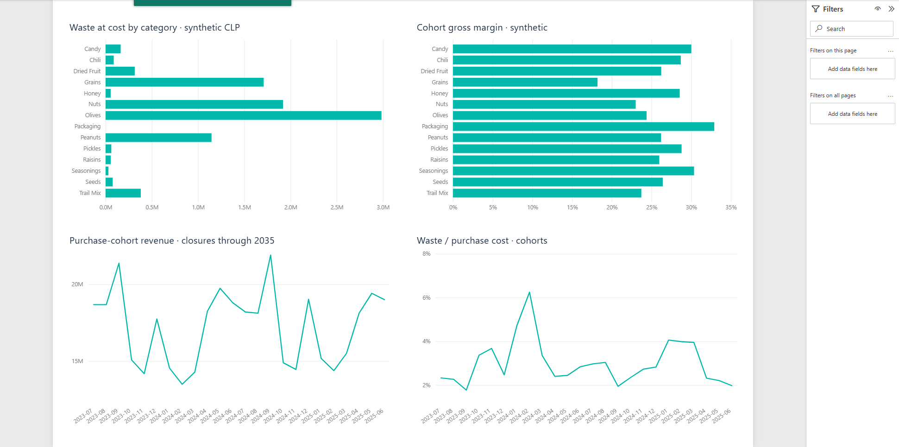

Control de merma y reposiciónWaste and replenishment control
Priorizar un piloto de merma en aceitunas antes de aprobar inversión en frío o emitir órdenes automáticas. La categoría concentra CLP 2.984.432 de merma valorada al costo en las cohortes simuladas.Prioritize an olives waste pilot before approving cold-storage investment or automated orders. The category accounts for CLP 2,984,432 in simulated cohort waste at acquisition cost.

| Indicador / Metric | Resultado / Result |
|---|---|
| Merma al costo / Waste at cost | CLP 8,992,168 |
| Merma sobre costo / Waste cost rate | 2.90% |
| Margen bruto / Gross margin | 25.03% |
| Cierres posteriores / Later closures | 498 |
Alcance y fuenteScope and source
128 productos, 22 proveedores y 3.825 lotes simulados. Compras de julio de 2023 a junio de 2025. Los cierres llegan hasta 2035; los resultados completos no son ventas realizadas en dos años.
128 products, 22 suppliers and 3,825 synthetic batches. Purchases span July 2023 to June 2025. Closures extend to 2035; full cohort results are not two-year realized sales.
Método y validaciónMethod and validation
Se enlazaron lotes por clave única y se conciliaron cantidades, costo y utilidad. La merma se agrega en CLP para evitar sumar kg, frascos y paquetes. El Excel separa cierres al 30 de junio de 2025 y posteriores, y conserva los registros originales.
Unique batch joins reconcile quantities, costs and gross profit. Waste is aggregated in CLP rather than combining kilograms, jars and packs. Excel separates closures at the June 30, 2025 cutoff and retains original records.
Siguiente decisiónNext decision
Registrar ventas diarias por SKU, merma y motivo, inventario contado y entradas. Comparar costo de merma por kg comprado y faltantes entre ciclos equivalentes. Cotizar y validar la aptitud de los productos antes de evaluar inversión, electricidad y mantenimiento.
Capture daily SKU sales, waste reasons, physical stock counts and receipts. Compare waste cost per kilogram purchased and stockouts over equivalent cycles. Obtain quotes and validate product suitability before assessing investment, energy and maintenance.
Límites de la evidenciaEvidence limits
Los datos son simulados y el stock es cualitativo. Las compras no son demanda observada. No se han demostrado ahorros reales, vida útil adicional ni beneficio de un congelador. La conversión USD a 935 CLP es ilustrativa.
Data are synthetic and stock is qualitative. Purchases are not observed demand. Realized savings, added shelf life and freezer benefits have not been demonstrated. The 935 CLP/USD conversion is illustrative.
Documentación técnicaTechnical documentation
Explora el reporte Power BIExplore the Power BI report
Vista previa del reporte de escritorio. Descarga el proyecto completo para usar los filtros y explorar los datos.Preview of the desktop report. Download the complete project to use filters and explore the data.

Extrae todo el ZIP, abre el archivo .pbip con Power BI Desktop y pulsa Actualizar. Mantén las carpetas incluidas juntas.Extract the entire ZIP, open the .pbip file in Power BI Desktop and select Refresh. Keep the included folders together.